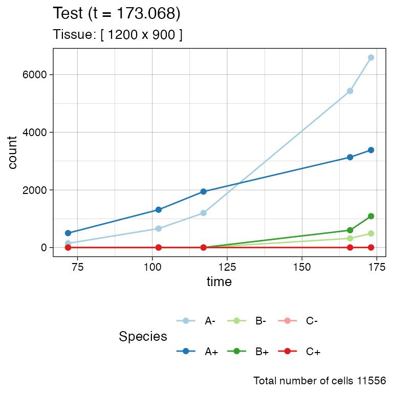
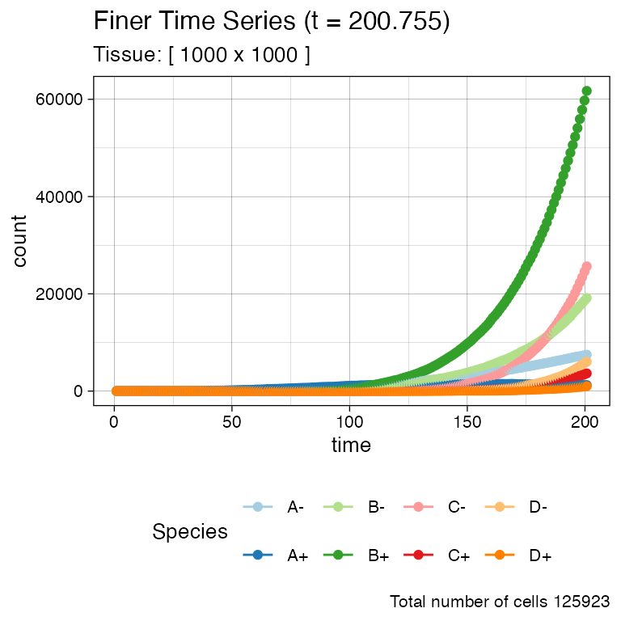
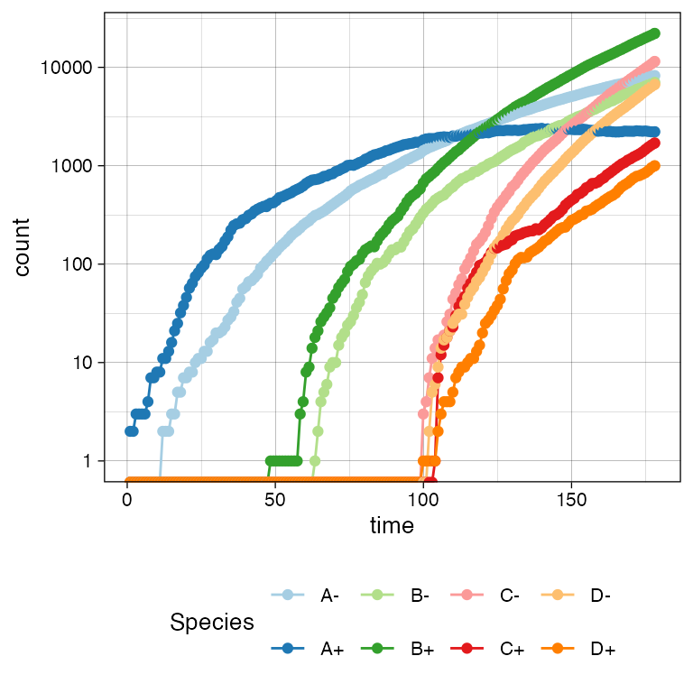
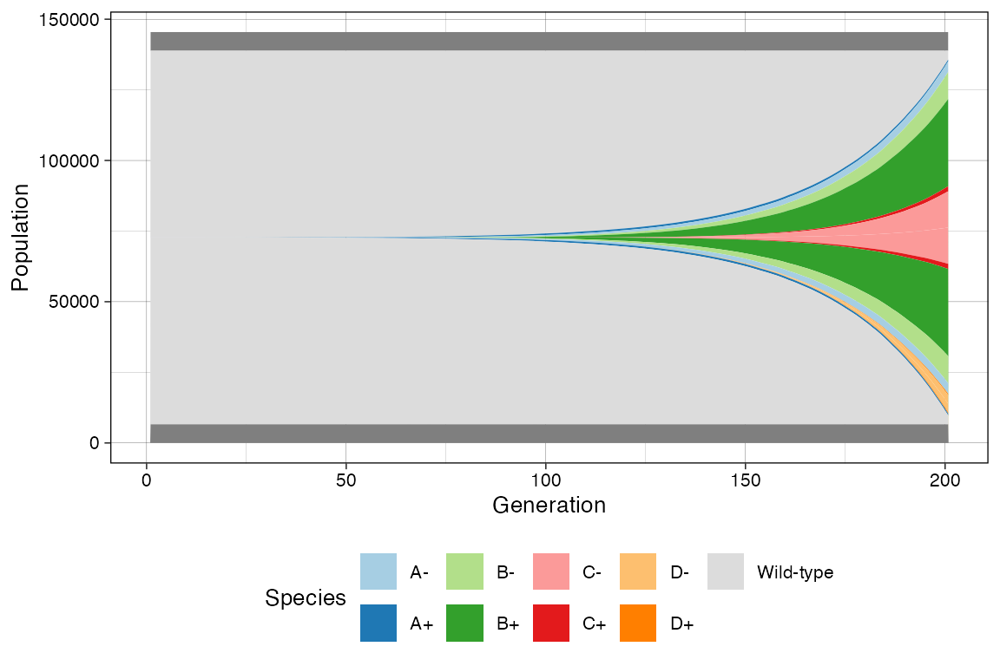
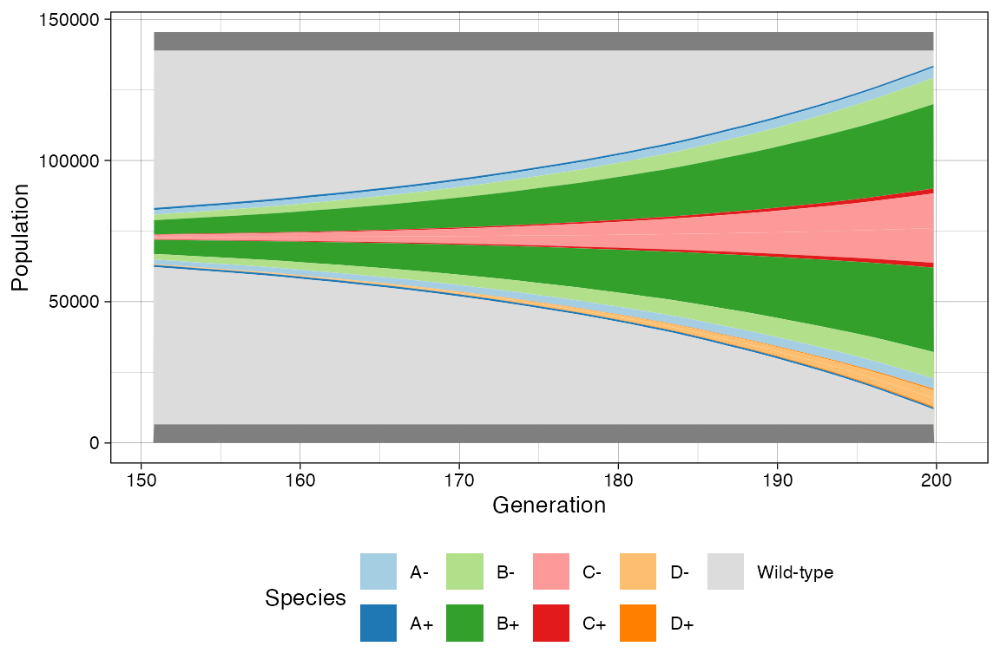
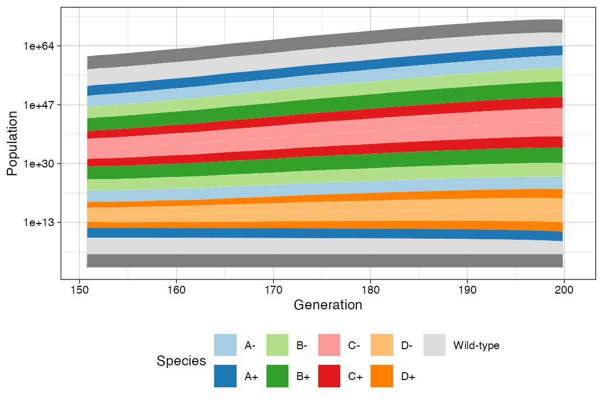
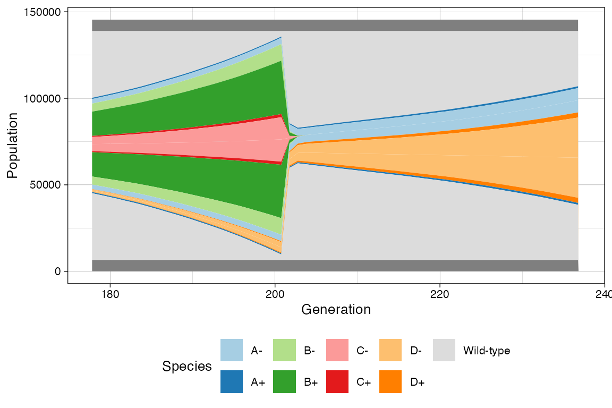
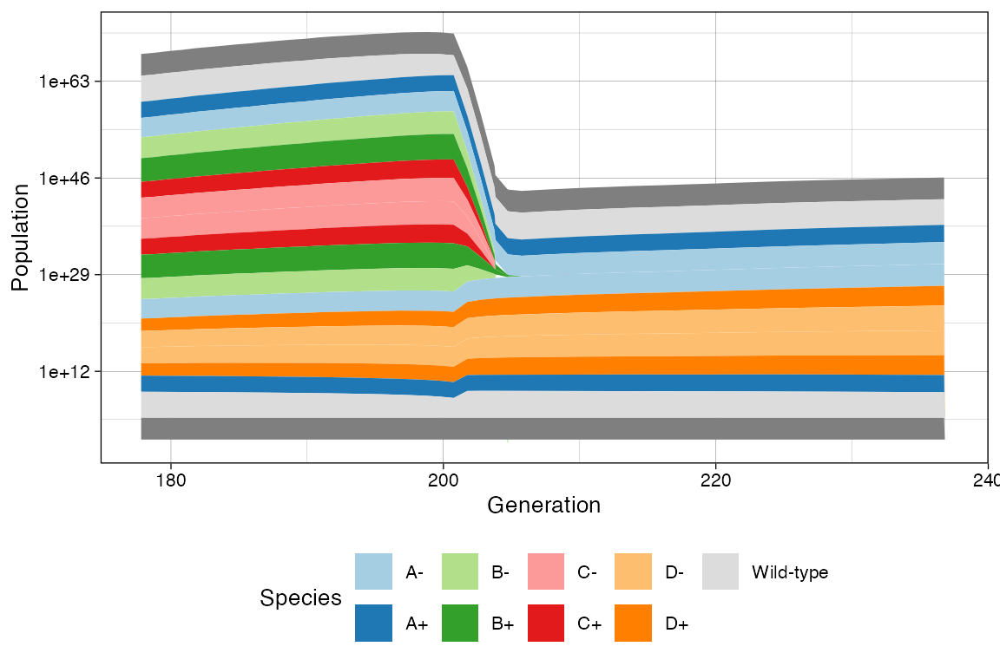

Note: This article presents advanced topics on tissue simulation. Refer to
vignette("tissue_simulation")for an introduction on the subject.
Disclaimer: RACES/rRACES internally implements the probability distributions using the C++11 random number distribution classes. The standard does not specify their algorithms, and the class implementations are left free for the compiler. Thus, the simulation output depends on the compiler used to compile RACES, and because of that, the results reported in this article may differ from those obtained by the reader.
Sometimes it is convenient to plot a time series of a simulation, reporting species or firing counts over time. Since rRACES is programmable, it is immediate to make a for-loop algorithm and collect the simulation data over time.
Default History-Based Data
However, this is not required because at the end of any
run_to_* methods, RACES stores the data about the number of
species cells, and that of event firings. These data can be
extracted.
Let us consider the simulation sim as produced in
vignette("tissue_simulation").
library(rRACES)
library(dplyr)
#>
#> Attaching package: 'dplyr'
#> The following objects are masked from 'package:stats':
#>
#> filter, lag
#> The following objects are masked from 'package:base':
#>
#> intersect, setdiff, setequal, union
# The firings
sim$get_firing_history() %>% head()
#> event mutant epistate fired time
#> 1 death A - 44 69.90667
#> 2 growth A - 331 69.90667
#> 3 switch A - 46 69.90667
#> 4 death A + 1097 69.90667
#> 5 growth A + 1650 69.90667
#> 6 switch A + 100 69.90667
# For example, total number of the deaths on `B+` at the end of the
# previous calls of the `run_to_*` methods
sim$get_firing_history() %>%
filter(event == "death", mutant == "B", epistate == "-")
#> event mutant epistate fired time
#> 1 death B - 0 69.90667
#> 2 death B - 0 84.11499
#> 3 death B - 0 99.12279
#> 4 death B - 398 135.91017
#> 5 death B - 706 142.91031
# The counts
sim$get_count_history() %>% head()
#> mutant epistate count time
#> 1 A - 341 69.90667
#> 2 A + 500 69.90667
#> 3 B - 0 69.90667
#> 4 B + 0 69.90667
#> 5 C - 0 69.90667
#> 6 C + 0 69.90667The time-series can be plot using plot_timeseries()
# Time-series plot
plot_timeseries(sim)
Custom Time-Series
If the default time-series is not enough coarse-grained, one can set
SpatialSimulation$history_delta to increase the sampling
rate of the state (by default,
SpatialSimulation$history_delta is set to
).
We show this by re-simulating a tumour with two submutants.
# Example time-series on a new simulation, with coarse-grained time-series
sim <- SpatialSimulation("Finer Time Series")
sim$history_delta <- 1
sim$death_activation_level <- 100
# A
sim$add_mutant(name = "A",
epigenetic_rates = c("+-" = 0.01, "-+" = 0.01),
growth_rates = c("+" = 0.2, "-" = 0.08),
death_rates = c("+" = 0.1, "-" = 0.01))
sim$place_cell("A+", 500, 500)
sim$run_up_to_size("A+", 400)
#> [████████████████████████████████████████] 100% [00m:00s] Saving snapshot
# B (linear inside A)
sim$add_mutant(name = "B",
epigenetic_rates = c("+-" = 0.05, "-+" = 0.05),
growth_rates = c("+" = 0.3, "-" = 0.3),
death_rates = c("+" = 0.05, "-" = 0.1))
sim$mutate_progeny(sim$choose_cell_in("A"), "B")
sim$run_up_to_size("B-", 300)
#> [████████████████████████████████████████] 100% [00m:00s] Saving snapshot
# C (linear inside B)
sim$add_mutant(name = "C",
epigenetic_rates = c("+-" = 0.1, "-+" = 0.1),
growth_rates = c("+" = 0.2, "-" = 0.4),
death_rates = c("+" = 0.1, "-" = 0.01))
sim$mutate_progeny(sim$choose_cell_in("B"), "C")
# D (linear inside A, so branching with C) - same parameters of C
sim$add_mutant(name = "D",
epigenetic_rates = c("+-" = 0.1, "-+" = 0.1),
growth_rates = c("+" = 0.2, "-" = 0.4),
death_rates = c("+" = 0.1, "-" = 0.01))
sim$mutate_progeny(sim$choose_cell_in("A"), "D")
sim$run_up_to_size("D+", 1000)
#> [████████████----------------------------] 28% [00m:00s] Cells: 24575 [██████████████████████████--------------] 63% [00m:01s] Cells: 42592 [███████████████████████████████████████-] 97% [00m:02s] Cells: 58741 [████████████████████████████████████████] 100% [00m:02s] Saving snapshotThe time-series can be plot using plot_timeseries().
# Time-series plot
plot_timeseries(sim)
# Logscale helps seeing the different effective growth rates
plot_timeseries(sim) + ggplot2::scale_y_log10()
#> Warning in ggplot2::scale_y_log10(): log-10 transformation introduced infinite values.
#> log-10 transformation introduced infinite values.
Muller Plot
We can also get a Muller plot of the evolution using ggmuller.
# default Muller plot
plot_muller(sim)
In this case every population is annotated as a descendant of the ancestor mutant. Note however that reversible espistates do not fit a traditional Muller plot because they violate the no-back mutation model.
In this case, rRACES will show first the epistate that was randomly injected in the simulation, and the second will result by linear. This is not a completely correct perspective of the simulation time-series; still, it help understand trends.
# Custom Mullers
clock <- sim$get_clock()
plot_muller(sim) + ggplot2::xlim(clock * 3/4, clock)
plot_muller(sim) +
ggplot2::xlim(clock * 3/4, clock) +
ggplot2::scale_y_log10()
Time-Varying Evolutionary Rates
You can model the fact that the rates of one species. For instance, this happens when a population is subject to a targeted treatment.
Considering the example above, where C and
D have the same rates, we increase the death rate of both
C+ and C- species, as well as B+
and B-.
# Current rates
sim
#>
#> ======= ==== ==== ==== ====== =========
#> species λ δ ε counts %
#> ======= ==== ==== ==== ====== =========
#> A- 0.08 0.01 0.01 8234 13.605645
#> A+ 0.20 0.10 0.01 2216 3.661660
#> B- 0.30 0.10 0.05 7032 11.619491
#> B+ 0.30 0.05 0.05 22140 36.583552
#> C- 0.40 0.01 0.10 11487 18.980816
#> C+ 0.20 0.10 0.10 1705 2.817297
#> D- 0.40 0.01 0.10 6705 11.079165
#> D+ 0.20 0.10 0.10 1000 1.652374
#> ======= ==== ==== ==== ====== =========
#>
#> Species [A-]: 3570 (deaths), 11973 (duplications) and 1340 (switches)
#> Species [A+]: 23175 (deaths), 25223 (duplications) and 1171 (switches)
#> Species [B-]: 20571 (deaths), 22726 (duplications) and 3208 (switches)
#> Species [B+]: 29098 (deaths), 56115 (duplications) and 8086 (switches)
#> Species [C-]: 2068 (deaths), 15720 (duplications) and 3168 (switches)
#> Species [C+]: 3331 (deaths), 2870 (duplications) and 1002 (switches)
#> Species [D-]: 1123 (deaths), 9074 (duplications) and 1793 (switches)
#> Species [D+]: 1903 (deaths), 1656 (duplications) and 547 (switches)
# Raise the death rate levels
sim$update_rates("B+", c(death = 3))
sim$update_rates("B-", c(death = 3))
sim$update_rates("C+", c(death = 3))
sim$update_rates("C-", c(death = 3))
# Now D will become larger
sim$run_up_to_size("D+", 6000)
#> [██████████████████----------------------] 43% [00m:00s] Cells: 32834 [█████████████████████████████████-------] 81% [00m:01s] Cells: 59285 [████████████████████████████████████████] 100% [00m:01s] Saving snapshot
# Current state
sim
#>
#> ======= ==== ==== ==== ====== =========
#> species λ δ ε counts %
#> ======= ==== ==== ==== ====== =========
#> A- 0.08 0.01 0.01 15814 22.213170
#> A+ 0.20 0.10 0.01 2547 3.577649
#> B- 0.30 3.00 0.05 0 0.000000
#> B+ 0.30 3.00 0.05 0 0.000000
#> C- 0.40 3.00 0.10 0 0.000000
#> C+ 0.20 3.00 0.10 0 0.000000
#> D- 0.40 0.01 0.10 46831 65.781268
#> D+ 0.20 0.10 0.10 6000 8.427913
#> ======= ==== ==== ==== ====== =========
#>
#> Species [A-]: 8327 (deaths), 25352 (duplications) and 2850 (switches)
#> Species [A+]: 33287 (deaths), 34624 (duplications) and 1639 (switches)
#> Species [B-]: 28743 (deaths), 23600 (duplications) and 3335 (switches)
#> Species [B+]: 53576 (deaths), 58719 (duplications) and 8479 (switches)
#> Species [C-]: 15242 (deaths), 17754 (duplications) and 3576 (switches)
#> Species [C+]: 5570 (deaths), 3057 (duplications) and 1063 (switches)
#> Species [D-]: 10168 (deaths), 66646 (duplications) and 13398 (switches)
#> Species [D+]: 14912 (deaths), 11264 (duplications) and 3751 (switches)
# This now show the change in rates
clock <- sim$get_clock()
plot_muller(sim) + ggplot2::xlim(clock * 3/4, clock)
plot_muller(sim) +
ggplot2::xlim(clock * 3/4, clock) +
ggplot2::scale_y_log10()